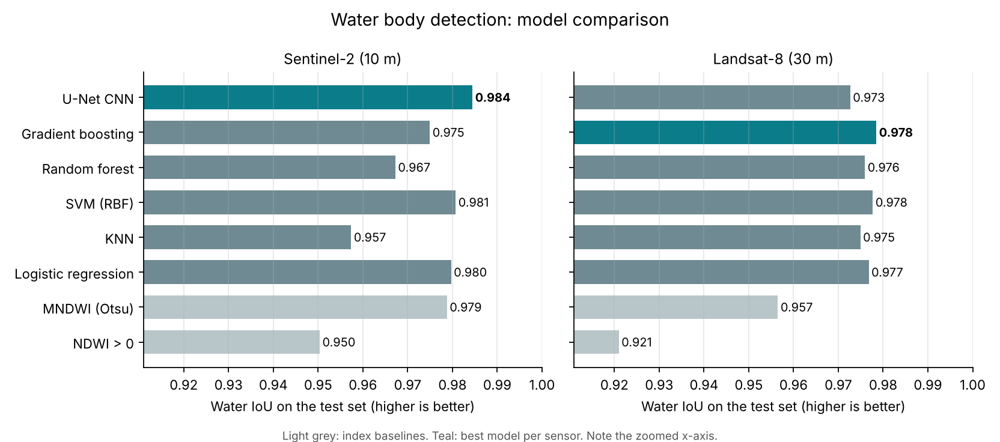
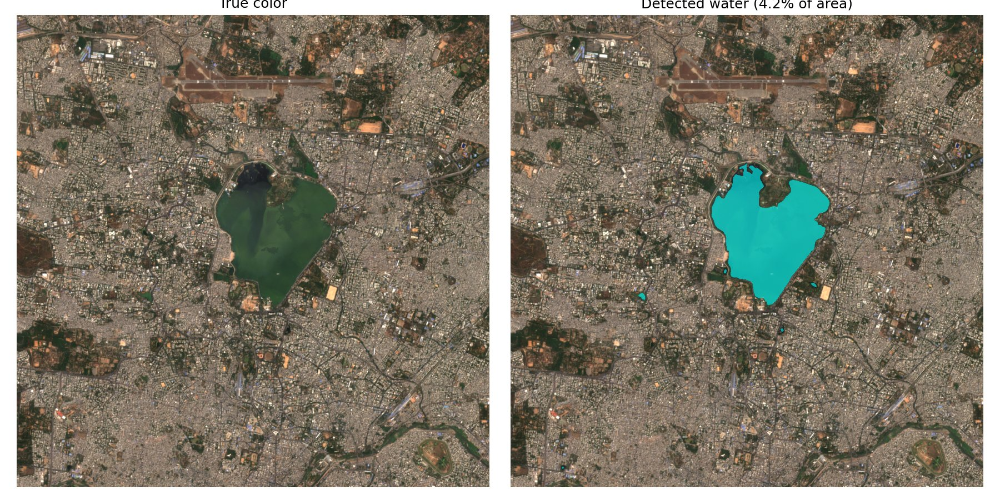

Remote sensing case study
Mapping surface water pixel by pixel from Sentinel-2 and Landsat-8 imagery, and testing whether a CNN that sees spatial context beats classical models that look at one pixel at a time.
Knowing where surface water is, and how it changes, matters for water supply planning, flood response and drought monitoring. Satellites photograph the whole planet every few days, so the question is how to turn those images into reliable water maps.
The classic approach is a spectral index. Water reflects green light but absorbs near-infrared, so the Normalized Difference Water Index, NDWI = (Green − NIR) / (Green + NIR), is high over water. A single threshold on NDWI works on clear lakes but struggles with building shadows, dark rooftops, wet soil and muddy water.
I wanted to find out how much learned models improve on that threshold, and whether a convolutional network, which sees the shape and surroundings of each pixel, does better than classical models that only see one pixel's numbers.
I built the dataset with Google Earth Engine. For each study area and month, the pipeline takes every satellite image, removes clouds and cloud shadows using each sensor's quality bands, and combines the clear pixels into one median composite. Both sensors are mapped to the same six bands: blue, green, red, near-infrared and two shortwave-infrared bands.
Labels come from the JRC Global Surface Water monthly history, using the same month as the imagery so the label and the image describe the same moment. Pixels that were cloudy in the imagery are marked "ignore" rather than guessed.
I picked eight areas with different kinds of water, in their dry season to limit clouds:
| Area | Water type | Month |
|---|---|---|
| Hyderabad, India | City lakes and reservoirs | Feb 2021 |
| Kolleru Lake, India | Shallow lake surrounded by aquaculture ponds | Feb 2021 |
| Chilika Lake, India | Coastal lagoon | Feb 2021 |
| Varanasi, India | Ganges river and floodplain | Mar 2021 |
| Lake Okeechobee, USA | Large lake and wetlands | Mar 2021 |
| IJsselmeer, Netherlands | Lake, polders and canals | Apr 2021 |
| Hudson Valley, USA | River and reservoirs | Sep 2021 |
| Lake Victoria, Uganda | Lake shoreline near Kampala | Jul 2021 |
| Model | What it sees |
|---|---|
| NDWI > 0 | One index, fixed threshold |
| MNDWI with Otsu threshold | One index, threshold learned from the data |
| Logistic regression, KNN, SVM, random forest, gradient boosting | All 10 features of a single pixel |
| U-Net CNN | A 128 × 128 neighbourhood: shapes, shorelines and context |
Neighbouring tiles look almost identical. With a random split, the test set would contain near-copies of training tiles and the scores would look better than they really are. Grouping tiles into spatial blocks and keeping each block in one split makes the test closer to mapping a place the model has not seen.
Most pixels are land. A model that predicts "land" everywhere can still score high accuracy. So I compare models on IoU and F1 for the water class, with Cohen's kappa as a check, and treat accuracy as secondary.
SVM and KNN slow down sharply with more data, so they train on smaller samples (20,000 and 50,000 pixels) than the tree models. Every model, including the CNN, is then scored on exactly the same test pixels, so differences come from the models and not from the test data.
The JRC labels are derived from 30 m Landsat imagery, so they are a strong reference but not hand-drawn ground truth. Narrow rivers and small ponds can be missed, which matters most for the 10 m Sentinel-2 results. Cloud-masked pixels are excluded instead of being counted as land.
Every model was scored on the same 500,000 test pixels per sensor, from locations it never saw in training.

| Model | Sentinel-2 IoU | Landsat-8 IoU |
|---|---|---|
| NDWI > 0 | 0.950 | 0.921 |
| MNDWI (Otsu threshold) | 0.979 | 0.957 |
| Logistic regression | 0.980 | 0.977 |
| KNN | 0.957 | 0.975 |
| SVM (RBF) | 0.981 | 0.978 |
| Random forest | 0.967 | 0.976 |
| Gradient boosting | 0.975 | 0.978 |
| U-Net CNN | 0.984 | 0.973 |
The U-Net reached 0.984 water IoU and 99.0% accuracy. Compared with the NDWI threshold, the share of mislabelled water area (1 − IoU) fell from 5.0% to 1.6%, about two-thirds fewer errors. At 10 m, shorelines and small ponds span enough pixels for spatial context to pay off.
Gradient boosting scored 0.978 against the U-Net's 0.973. At 30 m, a 128 × 128 tile covers almost 4 km and fine shoreline detail is lost. The JRC labels are themselves produced from Landsat by a per-pixel classifier, so per-pixel models trained on Landsat bands can match them very closely.
Choosing the MNDWI threshold with Otsu's method (0.19 for Sentinel-2, 0.17 for Landsat-8, instead of the usual 0) closed most of the gap to the learned models.

U-Net water mask over Hyderabad, February 2021. The model outlines Hussain Sagar lake and several small ponds.
These are single runs with one random seed, so differences of about 0.005 IoU between the top models could change with a different split.